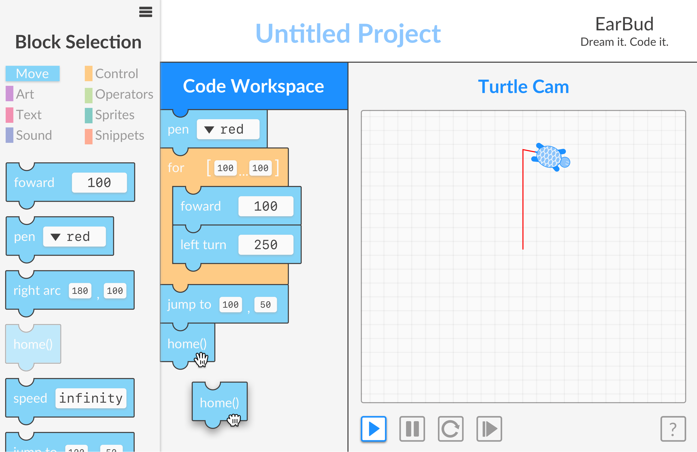

Overview
EarBud is a website that enables visually impaired users to navigate and comprehend block-based computer programs.
Roles
Undergraduate Research Assistant
Audio Engineer
User Interface Designer
User Experience Designer
Timeline
May 2017 - Present
Results
Currently conducting further usabliity testing for public release.

The problem.
Speech readers are a means to an end for most visually impaired people, but are not necessarily the most productive tools for comprehension and usability.
First, we need to catch up.
In order to effectively create a way for visually impaired users to program better, our team had to figure out what was already known. From previous publications, we learned about the differences in the current speech technology and symbolistic sounds.
We found out that auditory icons, or sounds that correlate to real world noises, weren’t as effective as earcons, or more abstract sounds. I focused on creating earcons.
Second, we thought about video games.
After creating sounds, we began to create a testing interface. Deriving controls from video games, we narrowed down our ideas to two distinct interaction systems:
-
WASD for navigation
Enter for selection -
Arrow Keys for navigation
Tab for selection
Third, I made the thing.
So then we needed a pretty interface similar to PencilCode.net, where our project would be implemented.
Fourth, we recruited very nice people.
Currently, we’re continuing to user test our interface. We test not only user’s comprehension of the simple programs we created, but also the recognition of earcons mapped to certain actions.
Our solution.
The EarBud auditory display project allows the user to pick the sounds: choosing from simple speech to earcons (abstract sounds) to spearcons (sped up speech). The auditory display also has special keyboard controls built to emphasize speed and minimize delays in sound comprehension.